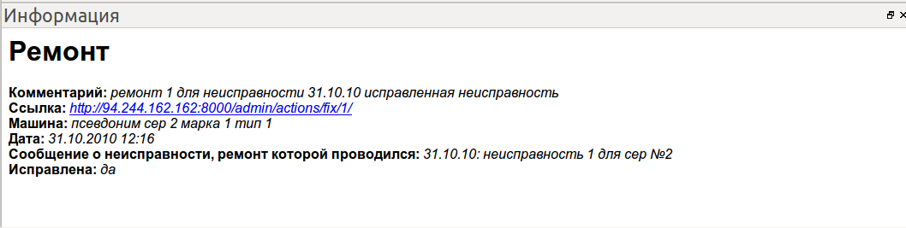

В панели информации отображается подробная информация о выбранном в дереве оборудования или в таблице событий объекте. Кроме того, в панели информации имеется гиперссылка на страницу текущего объекта в административной панели.
Размер и положение панели информации может быть произвольно изменено пользователем, изменения сохраняются при выходе из программы. Панель информации может быть закрыта нажатием на крестик в ее заголовке, и восстановленна из меню